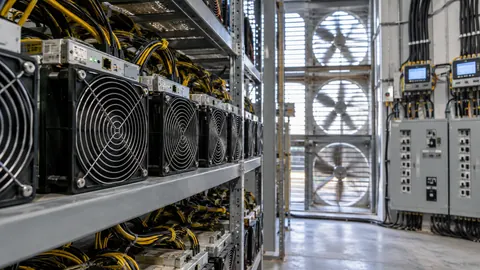

Crypto
Bitcoin, Ethereum, stablecoins and the financial systems taking shape around them.
Crypto prices
Ethereum ETH
USD · BitstampSolana SOL
USD · CoinbaseXRP XRP
USD · BitstampUSD quotes from Bitstamp for Bitcoin, Ethereum and XRP, and Coinbase for Solana. Each chart shows the past day. Prices can differ between exchanges.
Latest news
Crypto
Ripple, Visa and Mastercard join Singapore-led digital-money push
Malaysia and Thailand join Singapore in shaping cross-border settlement rules for tokenized deposits and regulated stablecoins.
Crypto
HSBC launches RedCoin payments, keeping the stablecoin inside its own network
The Hong Kong dollar token is rolling out to PayMe users. Its private network, reserve disclosures and lack of deposit protection define what customers receive.
Crypto
SoFi launches a 4.40% tokenized deposit with a bridge to crypto
SoFi Earn represents bank deposits, while conversion to SoFiUSD moves funds into a different product. The insurance boundary matters as much as the rate.

Crypto
Fireblocks Denies Visa Takeover Talks After Report of a $2.5 Billion Deal
Fireblocks rejected a report about acquisition talks with Visa. The dispute comes as payment networks expand their stablecoin infrastructure.
Crypto
Ethereum’s New Consensus Draft Targets a Fourfold Cut in Finality Time
A new Ethereum draft separates two validator voting jobs to pursue faster finality. It remains unfinished and has no activation date.
Crypto
Coinbase Ireland Agrees to €3.25 Million Safeguarding Penalty
Ireland’s central bank cited customer-fund and outsourcing failures; sanctions await court confirmation, and Coinbase says customers suffered no losses.

Crypto
Bitcoin Retreats Toward $82,000 After Its Push Near $85,000 Fades
Bitcoin gave back an overnight rally as technology-market nerves resurfaced; ether, Solana and XRP also weakened in a timed exchange snapshot.

Crypto
OCC Finalizes Stablecoin Rules Ahead of January 2027 Compliance Deadline
The OCC’s final GENIUS Act framework takes effect January 18, 2027, alongside licensing guidance and a separate reporting process.

Crypto
Grayscale Opens In-Kind Subscriptions Across 10 Crypto Investment Products
Eligible holders can contribute tokens for fund shares through authorized intermediaries, with product-specific minimums, fees and terms.

Crypto
Solana Lists Alpenglow as Active on Mainnet, Targeting Faster Finality
The consensus upgrade targets roughly 150-millisecond finality, but that goal differs from measured wallet or exchange response times.

Crypto
SBI and Shinhan Card Plan Yen Stablecoin Payment Tests Between Japan and Korea
The partners will examine retail payments and trade settlement under a preliminary agreement, without announcing a commercial launch date.

Crypto
Bitcoin Rebounds Above $82,000 as Oil Retreats
Bitcoin recovered with risk assets on Monday, while two weeks of US spot-ETF outflows kept the strength of underlying demand in question.
Understand crypto
Start with the mechanics: ownership, payments, leverage and market rules.
Crypto explainer
Explaining a Crypto Rally Requires More Than a Headline
Policy news, financing conditions and trading positions can coincide. Establishing their contribution requires a timeline and evidence.
Crypto explainer
Reading the CLARITY Act's Proposed Crypto Market Structure
The House-passed 2025 text describes a regulatory framework. Its provisions and legislative status must be distinguished from current requirements.

Crypto explainer
A Bitcoin Miner Sells Computing Work Against a Volatile Reward
Power, equipment efficiency and network competition shape mining returns. Production volume alone cannot establish profitability.
Crypto explainer
DeFi Moves Financial Rules Into Software, but Leaves Risks Behind
Lending pools and automated exchanges depend on collateral, code and price inputs. Decentralization does not remove every intermediary or point of control.
Browse by topic
Reporting and explainers from the full archive.
Crypto, stablecoins and market structure (27)
- Ripple, Visa and Mastercard join Singapore-led digital-money push
- HSBC launches RedCoin payments, keeping the stablecoin inside its own network
- SoFi launches a 4.40% tokenized deposit with a bridge to crypto
- Fireblocks Denies Visa Takeover Talks After Report of a $2.5 Billion Deal
- Ethereum’s New Consensus Draft Targets a Fourfold Cut in Finality Time
- Coinbase Ireland Agrees to €3.25 Million Safeguarding Penalty
- Bitcoin Retreats Toward $82,000 After Its Push Near $85,000 Fades
- OCC Finalizes Stablecoin Rules Ahead of January 2027 Compliance Deadline
- Grayscale Opens In-Kind Subscriptions Across 10 Crypto Investment Products
- Solana Lists Alpenglow as Active on Mainnet, Targeting Faster Finality
- SBI and Shinhan Card Plan Yen Stablecoin Payment Tests Between Japan and Korea
- Bitcoin Rebounds Above $82,000 as Oil Retreats
- Chip-Stock Perpetuals See $52 Million Liquidated During Weekend Trading
- Circle Defends USDC's Revenue Model as Stablecoin Competition Intensifies
- Turkey Confirms Richard Heart’s Detention and Reports $7.15 Million Cash Seizure
- Broadcom, Verizon and CoreWeave Object to Stock Tokens on OKXICE
- Bitcoin Breaks Below $80,000 as Inflation Shock and AI Selloff Hit Crypto
- Explaining a Crypto Rally Requires More Than a Headline
- Reading the CLARITY Act's Proposed Crypto Market Structure
- A Bitcoin Miner Sells Computing Work Against a Volatile Reward
- DeFi Moves Financial Rules Into Software, but Leaves Risks Behind
- What a Majority Hash-Power Attack Can Do to Bitcoin
- Crypto Liquidation Begins Before All the Margin Is Gone
- US Crypto Taxes Begin With the Type of Transaction
- What a Bitcoin ETF Changes About Ownership
- A Stablecoin's Peg Depends on Its Backing and Redemption
- Bitcoin Halvings Change Supply, Not the Rules of Valuation